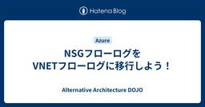
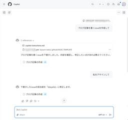
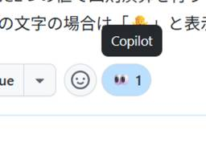
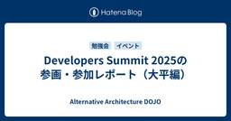

Alternative Architecture DOJO
https://aadojo.alterbooth.com/
オルターブースのクラウドネイティブ特化型ブログです。
フィード

NSGフローログをVNETフローログに移行しよう！
Alternative Architecture DOJO
はじめに こんにちは！そろそろ暑くなってきて衣替えを検討しているやしきんです🔥 今日はNSGフローログの廃止に伴い、VNETフローログへの移行をするための手順について解説します！ VNETフローログについては、詳しいログの検索方法等をまとめたブログ投稿していますので、もしよろしければご覧ください😄 aadojo.alterbooth.com NSGフローログの廃止 2027 年 9 月 30 日にネットワーク セキュリティ グループ (NSG) フロー ログは廃止されます。 この提供終了の一環として、2025 年 6 月 30 日以降新しい NSG フロー ログを作成できなくなります。 NSG…
4日前

GitHub Copilotにissueを作成してもらう！ 10
10
Alternative Architecture DOJO
こんにちは、dz_こと、大平かづみです。 これまでGitHub Copilotに欲しい機能は？と聞かれ、「issueを作成してほしい！」と答えていた私ですが、とうとう実現しました！ GitHub Copilotとの会話の中で自然言語で指示し、issueを作ってもらえるようになりました！ 詳細はこちらのGitHub Changelogをご参照ください。 github.blog Changelog記事の要約 ※ パブリック プレビューのため、変更される可能性があります GitHub Copilotによるissue作成機能の要点 自然言語によるissueの作成が可能に スクリーンショットなどの画像か…
4日前

GitHub Copilotがエージェントとしてタスクを行う「Coding Agent」を試す 1
Alternative Architecture DOJO
こんにちは、MLBお兄さんこと松村です。 日本時間の2025年5月20日から Microsoft Build がシアトルで開催されていますが、そこで GitHub Copilot の新機能として「Coding Agent」が発表されました。 github.blog 早速私のアカウントで利用可能となったので試してみました！ GitHub Copilot Coding Agent とは GitHub Copilot Coding Agent とは、課題（Issue）からタスクを整理し、Copilot が開発者として自律的にコーディングなどの作業を行う機能です。 Copilot が行うことができるタ…
5日前

Developers Summit 2025の参画・参加レポート（大平編）
Alternative Architecture DOJO
初めまして、dz_こと、大平かづみです。昨年10月にオルターブースに入社しました。よろしくお願いします。 この記事は、このブログで書くはじめての記事です。今回は、先日開催されたDevelopers Summit 2025に参加したレポートをお届けします。 Developers Summitと私の関係性 実は、大変光栄なことに、2021年よりDevelopers Summitのコンテンツ委員を務めさせていただいております。 コンテンツ委員は、様々な分野からメンバーが参画し、各分野の知見や経験を持ち寄り、主催の翔泳社の方々とともにイベントの質を高めるための仕組みです。来場される皆さまが一つでも多く…
5日前

Salesforce認定AIアソシエイト合格しました！
Alternative Architecture DOJO
みなさん、こんにちはオルターブース広報の坂根です。 最近は寒くなったり暖かくなったりで、風邪ひかないように気をつけないとですね！！ 私は、R1を毎日飲んで気合い入れます！！！ 今回は、Salesforce認定AIアソシエイト合格しましたので、勉強方法や今後の展望について書いていこうかと思います。 Salesforce認定AIアソシエイトとは Salesforce認定AIアソシエイト資格は、Salesforceが提供するAI関連の認定資格の一つです。 この資格は、下記4つの項目についてを評価します。％は問題の割合ですね。 ▪️AI Fundamentals（AIの基礎）: 約30% AIの基本的…
11日前
Azure NSGによるセキュリティ規則の実証テストをしてみた！
Alternative Architecture DOJO
こんにちは、高田です！ 今回はAzureのNSG(ネットワークセキュリティグループ)についてです。 セキュリティ規則を作る作業を解説している記事などはたくさんあるのですが、やっぱり自分で規則を作ったのならば、実際に規則にのっとって通信が「許可」「拒否」されているのかを確認したいなーと思い記事を書くことにいたしました。 私のように実際に規則を作って確認してみたい！……という方がいましたら是非一緒にやってみましょう😊 そのために今回はVM(仮想マシン)を作成し、NICについているNSGに対してセキュリティ規則を作っていこうと思います！ NSG(ネットワークセキュリティグループ)とは? ネットワーク…
12日前
google/A2AのSemantic KernelサンプルでAzure OpenAI Serviceを使う
Alternative Architecture DOJO
GoogleのAIエージェントプロトコル「Agent2Agent (A2A)」をSemantic Kernelのサンプルで試し、Azure OpenAI Serviceを利用する方法を解説します。Python環境のセットアップから、Azure向けのコード変更、API設定の追加手順などを詳しく紹介。AzureでAIエージェントを実装する際のポイントを整理した記事です。
13日前
Azure App Service LinuxでWebJobsが正式サポートされました
Alternative Architecture DOJO
Azure App Service Linux で WebJobs が正式サポートされました。Web アプリとは異なるバックグラウンドタスクを実行できる WebJobs の利用方法について紹介しています。
19日前
【Mac】SSH Keyを発行する時に『id_ed25519』が生成される理由
Alternative Architecture DOJO
こんにちは！オルターブース広報の坂根です。 もう20度を超える日が続いて、初夏かな？と思う日もありますね。 今回は、非エンジニアの私がMacでAzureDevOpsのReposに接続する時に詰んだので解決した流れをご紹介します。 目次 SSH Keyを発行する時に『id_ed25519』が生成される理由 隠しフォルダの表示させ方👇 1. Finderにて.sshフォルダを探すと・・・ない！ 2.「command」+「shift」+「.」で隠しフォルダーを表示させる。 接続する時に出たエラー SSHキーの生成時にid_rsaではなくid_ed25519が生成される原因について セキュリティの向上…
1ヶ月前
ASP.NET Core Minimal APIのバリデーションを試す (.NET 10 Preview 3)
Alternative Architecture DOJO
.NET 10 Preview 3で追加されたMinimal APIでのモデルバリデーションを検証してみました。
1ヶ月前
Azure OpenAI × Next.js を用いてオリジナルチャットボット作ってみた！
Alternative Architecture DOJO
こんにちは、高田です！ 以前、業務で利用する機会があったり、AI-900資格の勉強中にAzure OpenAIを触れる機会があり、面白いなと興味を持ちました。 そこで今回は、シンプルなチャットボットを作成し、Azure Static Web Appsへデプロイしてみました。 ちにみに自分はミケちゃんChatというアプリ名にして、猫型のAIアシスタントと会話できるようにしました。 お魚の話題になると嬉しそうにするようにしているのですが……うん、可愛いですね！😸 必要なもの Node.js（私が用いたバージョンはv20.19.0になります） Azureサブスクリプション ① Azure Open …
1ヶ月前
Salesforce 認定アドミニストレーターに合格しました
Alternative Architecture DOJO
みなさんこんにちは！ オルターブースの中島です。 最近は春になり始め暖かくなったなと思ったら、急に雨風が強く嵐のような気候の日があり、寒暖差が激しくなっていますね🌸🍃 私は週末に農業をすることが多いのですが、梨の花が満開でとても綺麗でした✨ 私の住んでいる地域は桜の開花時期と梨の開花時期はほとんど一緒なので、どちらも見ることができてとても綺麗です🌞 本日は Salesforce の認定アドミニストレーター資格試験に合格したお話と私の資格試験の勉強法についてお話します！ 目次 アドミニストレーターロールについて 認定アドミニストレーター試験の勉強 認定アドミニストレーター試験 最後に Sales…
1ヶ月前
合格体験記：Microsoft Azure AI のAI-900試験に合格
Alternative Architecture DOJO
こんにちは、高田です！ 最近は暑かったり寒かったりと体調を崩しやすい気候になっていますね、皆様も体調管理には十分お気をつけください。 さて今回はMicrosoft Azure AI の基礎資格である、AI-900の試験に合格いたしましたので、その合格体験記を書いていこうと思います✍️ 余談ですが、試験後に博多駅で寿司ネタを載せた猫のイラストが描かれたトートバッグ（1,100円）を見つけ、思わず購入を検討してしまいました……。 AI900とは AI-900は、Microsoftが提供する認定資格「Microsoft Azure AI Fundamentals」のことです。これは、Azureプラッ…
1ヶ月前
.NET Aspire 9.2の新機能”リソースグラフ”で依存関係を可視化する
Alternative Architecture DOJO
.NET Aspire 9.2の「リソースグラフ」を使えば、アプリの依存関係を視覚的に把握できます。ダッシュボード上に動的なグラフが表示され、管理やデバッグがスムーズになります。複雑な構成でも直感的に理解しやすくなるため、.NET Aspireを活用する方にはおすすめの機能です。
1ヶ月前
Azure App Serviceでのサイドカー機能でDocker Hubのイメージを使う際の注意点
Alternative Architecture DOJO
こんにちは、料理スキルは壊滅的ながらも辛うじて納豆炒飯だけは作れていたのですが、最近娘が納豆炒飯を作れるようになったので感心するとともにやや危機感を覚えている木村です。 先日、Azure App ServiceのDocker Compose機能が2027年3月31日で終了することが発表されました。 azure.microsoft.com App Service上で複数のコンテナを動かすための新しい手段としては、サイドカー機能が2024年11月に一般提供されていますので、今後はこちらを使うことになります。 azure.microsoft.com 本記事では、Azure App Service の…
1ヶ月前
GitHub Copilotを活用してGraph APIを使ったスクリプトを作成しました
Alternative Architecture DOJO
こんにちは！今年2月にオルターブースに入社した、實成と申します。 今回は、GitHub Copilotを活用して、Microsoft 365のユーザー新規登録のスクリプトを作成しましたので、その内容についてお話しします。 目次 目次 注意事項 背景と目的 Microsoft Graph APIの概要 スクリプトの詳細 回答結果 スクリプトの修正 実装のポイント 成果と学び 注意事項 このブログでは、生成AIを活用して作成されたコンテンツを含んでいます。以下の点にご留意ください。 正確性の保証: 生成AIから生成された情報は、必ずしも正確であるとは限りません。最新の情報や専門的なアドバイスが必要…
1ヶ月前
Azure Functions durable task schedulerを試してみた
Alternative Architecture DOJO
こんにちは、先日娘が「ママとイオンの矢印に行ってきた！」というので一体何のことかと思ったら無印(良品)のことだと気づいて大笑いした木村です。 先日、Azure Functions durable task schedulerがパブリックプレビューとしてリリースされました。早速こちらを試してみたので、その体験を共有したいと思います。 techcommunity.microsoft.com Durable task Schedulerとは？ Durable task Schedulerは、Azure FunctionsのDurable Functionsにおける新しいストレージプロバイダーです。ス…
1ヶ月前
自律的エージェントの進化『Project Padawan』発表: Microsoft AI Tour 2025 レポート
Alternative Architecture DOJO
オルターブースの倉地です！ 3/27 に開催された「Microsoft AI Tour 2025」に参加いたしましたので、当日のレポートをお届けします。 今回は、会場で出展されていたブースと、初公開された『Project Padawan』について紹介します。 Microsoft AI Tour は、ビジネスリーダー、開発者、AI 関心者、IT 専門家、パートナー向けのイベントです。今回の AI Tour は61都市で開催され、私は東京で開催されるイベントに参加しました。イベントでは、キーノートやセッション、ワークショップが開催され、実際に AI がどのように使われているかや、 AI を使うため…
2ヶ月前
VS Code v1.99のMCP Server機能で、WSL環境で動くgithub-mcp-serverを呼び出してみた
Alternative Architecture DOJO
こんにちは、先日花冷えで寒かった日に「ちゃっぷい・・」と呟いたら娘が「どんとぽっちい？」と聞いてきて、一体誰がそんな古いネタを仕込んだのかと吹き出した木村です(ちなみに仕込んだのは妻でした)。 今回は最新のVisual Studio Code v1.99で追加されたMCP Server機能と、WSL環境でgithub-mcp-serverを動かして利用する方法についてご紹介します。 MCP Serverとは MCP Serverとは、Model Context Protocol(モデル コンテキスト プロトコル)に基づく仕組みで、AI(特に大規模言語モデル:LLM)が外部ツールやデータベース、…
2ヶ月前
Microsoft AI Tour Tokyo 2025セッションレポート: 「今日から始めるAIエージェント開発」
Alternative Architecture DOJO
こんにちは、先日交差点の歩道を渡るときに娘が手を上げて渡っていると、保育園の子ども達がそのマネをして手を上げていて、付き添いの先生に「お姉ちゃんのマネできたね！お姉ちゃんありがとう！」と言われて誇らしげな顔をしている娘を見てこちらも誇らしい気持ちになった木村です。 本記事は、先日のMicrosoft AI Tourで参加した「今日から始めるAIエージェント開発」セッションについてのレポートです。登壇者はマイクロソフトの上野氏と稲葉氏でした。 aitour.microsoft.com AIエージェントのビジネスインパクト まず最初に、AIエージェントのビジネスインパクトについて説明がありました。…
2ヶ月前
GitHub Foundations 合格いたしました！
Alternative Architecture DOJO
こんにちは、高田です！ オルターブースに転職してからもう3ヶ月という月日が流れました、時間の経過はとても早いですね💦 4月になり新卒社員の方も入られ、これから楽しそうな新人研修がいっぱいあるようです。新人研修といっても社内の人であれば誰でも受けることができるのはありがたいですね、もちろん私も全部参加する意気込みです！！ さて今回はGitHubの基礎資格である GitHub Foundations の資格を取得いたしましたので、その合格体験記を書いていこうと思います✍️ education.github.com GitHub Foundationsとは この資格は、GitHubの基本的な操作や機…
2ヶ月前
Microsoft AI Tourの現地レポート！現地の様子をお届け！
Alternative Architecture DOJO
こんにちは！オルターブースの木村龍太郎です！ 先日3/27(木)に開催されたMicrosoft AI Tourに参加してきました！ 本記事では、Microsoft AI Tourの様子を皆さんにお届け出来たらと思います！ 【弊社社員の記事】 aadojo.alterbooth.com aadojo.alterbooth.com aadojo.alterbooth.com Microsoft AI Tour とは Microsoft AI Tour は、専門家、業界リーダー、技術者が集まり、AI がどのように成長を促進し、持続的な価値を創出するかを探る無料のイベントです。 世界60以上の都市で開…
2ヶ月前
Microsoft AI Tour Tokyo 2025セッションレポート: 「開発者のためのAIモデル: GitHub Models を使用すれば簡単かつ無料」
Alternative Architecture DOJO
こんにちは、先日娘が「私が生きてる意味って何？」と言ってきて、そういえば去年も同じような時期に哲学的なことを聞いてきたなと思い出して、進学の時は色々考えるのかなと感じた木村です。 先日参加したMicrosoft AI Tour Tokyo 2025で参加したセッションから、「開発者のためのAIモデル: GitHub Models を使用すれば簡単かつ無料」というセッションの内容を報告します。 aitour.microsoft.com GitHub Modelsについて GitHub Modelsは、GitHubが提供する機械学習やAIモデルのホスティングおよび管理サービスです。多くのモデルをG…
2ヶ月前
Microsoft AI Tour Tokyo 2025:基調講演まとめ
Alternative Architecture DOJO
こんにちは、先日妻が泣いてる娘に「ママはあなたのことが一番大事よ、だからそんなに泣かないで」と言ったものの泣き止まないのでどうしたのかと聞いたら「そういうママに感動してるの」と言われてこっちが感動した木村です。 2025年3月27日に東京ビックサイトで開催されたMicrosoft AI Tourに参加してきました。 基調講演の内容について取り急ぎまとめましたので皆様にお届けします。 aitour.microsoft.com 基調講演 今回の基調講演はMicrosoft CEOのサティア・ナデラ氏。日本のイベントで現地登壇されるということでビックリしました。 私は残念ながら参加申込時の抽選に落選…
2ヶ月前
Microsoft AI Tour Tokyo - Microsoft Fabricワークショップ参加レポート
Alternative Architecture DOJO
こんにちは！エンジニアの清島です。 2025年3月27日(木)に開催されたMicrosoft AI Tour Tokyoにて、Microsoft Fabricを取り上げたワークショップに参加しましたので その内容をピックアップしてお伝えしたいと思います！ 参加したワークショップ「Microsoft Fabric: リアルタイム インテリジェンスから始める」の情報は下記リンク先からご覧いただけます。 aitour.microsoft.com ワークショップの内容 本ワークショップは以下の構成で実施されました。 座学 Microsoft Fabricとは Real-Time Intelligenc…
2ヶ月前
GitHub EnterpriseとGitHub Copilotの管理戦略講座：東京編🗼
Alternative Architecture DOJO
こんにちは！広報担当の坂根です✨ 2025年2月からスタートした「GitHub EnterpriseとCopilotの管理戦略講座」の全国ツアーが、ついに東京に上陸🛬🗼 3月25日に開催したこのイベントにも、多くの参加者にご好評いただきました❣️ 今回も、講座中の様子や参加者の声をレポート形式でお届けします🎤 イベント概要 開催概要 日時：2025年3月25日(火)13:00-17:00 場所：Microsoft 本社会議室（東京都港区港南 2-16-3 品川グランドセントラルタワー） 講師: 榛葉 章隆（GitHub公認トレーナー / スクラムマスター） GitHub Enterpriseと…
2ヶ月前
ウェザーニューズの天気予報データをSORACOM Fluxで試してみた！
Alternative Architecture DOJO
はじめに こんにちは！最近段々とあったかくなって服装にいつも迷っているやしきんです🌸 今日はウェザーニューズのお天気データがSORACOM Fluxで利用できるようになったため、SORACOM Fluxで試してみました🌟 SORACOM Fluxとは？ SORACOM Fluxは、IoT アプリケーションを簡単にローコードで構築できるサービスになります。 soracom.jp 現在プランが3つあり、中でもDeveloperプランは無料で利用することができます👀 ウェザーニューズのお天気データが利用できるようになりました！ なんとSORACOM Fluxでウェザーニューズのお天気情報を直接利用す…
2ヶ月前
JAWS DAYS 2025で登壇しました
Alternative Architecture DOJO
こんにちは、先日スーパーに買い物を行ったときにレジに並んでいると、レジの係の方が「レジの応援お願いしますー」と他のスタッフの方を呼ばれたのですが、それを聞いた娘が「頑張れー！」とレジの方を応援していてそういうことではないんだけどなと思いつつも可愛いなと思った木村です。 2025年3月1日に開催されたJAWS DAYS 2025にて、「JAWS FESTA 2024『バスロケ』GPS×サーバーレスの開発と運用の舞台裏」というタイトルで登壇しました。本ブログでは、イベントの概要や私の発表内容、発端となったプロジェクトについてなどをレポートします。 イベントの概要 JAWS DAYSは、AWS Us…
3ヶ月前
『GitHub EnterpriseとCopilotの管理戦略講座』を大阪で開催しました！！
Alternative Architecture DOJO
こんにちは！オルターブース広報の坂根です🌟 現在『GitHub EnterpriseとCopilotの管理戦略講座』の全国ツアーを行っております✈️ 今回は2025年2月26日、大阪で開催したのでレポートをお届けします🎁 本イベントは、GitHub EnterpriseとCopilotの導入と活用に関する最新の戦略（座学）と実践的なハンズオンセッションを提供することを目的としております。 イベント概要 イベントバナー 日時：2025.2.26（水） 13:00-17:00 会場：インフォコム株式会社関西事業所 住所：大阪府大阪市中央区久太郎町1丁目6-29 JRE堺筋本町スクエア13F URL…
3ヶ月前
明日から使えるGitHub Enterprise/GitHub Copilotの管理戦略！開催レポート
Alternative Architecture DOJO
こんにちは！マーケティング部の坂根です！ 2025年2月5日、沖縄のMicrosoft Baseにて「明日から使えるGitHub Enterprise/GitHub Copilotの管理戦略！」というワークショップを開催しました。 本イベントは、GitHub Enterpriseの管理者やDevOpsツール推進担当者を対象に、GitHub EnterpriseとGitHub Copilotの管理戦略とビジネス活用戦略を楽しく学ぶことを目的としています。 参加者の皆様には、実際のデモンストレーションやハンズオンを通じて、最新の技術を体験していただきました。 イベント概要 Lagoon KOZAさ…
3ヶ月前